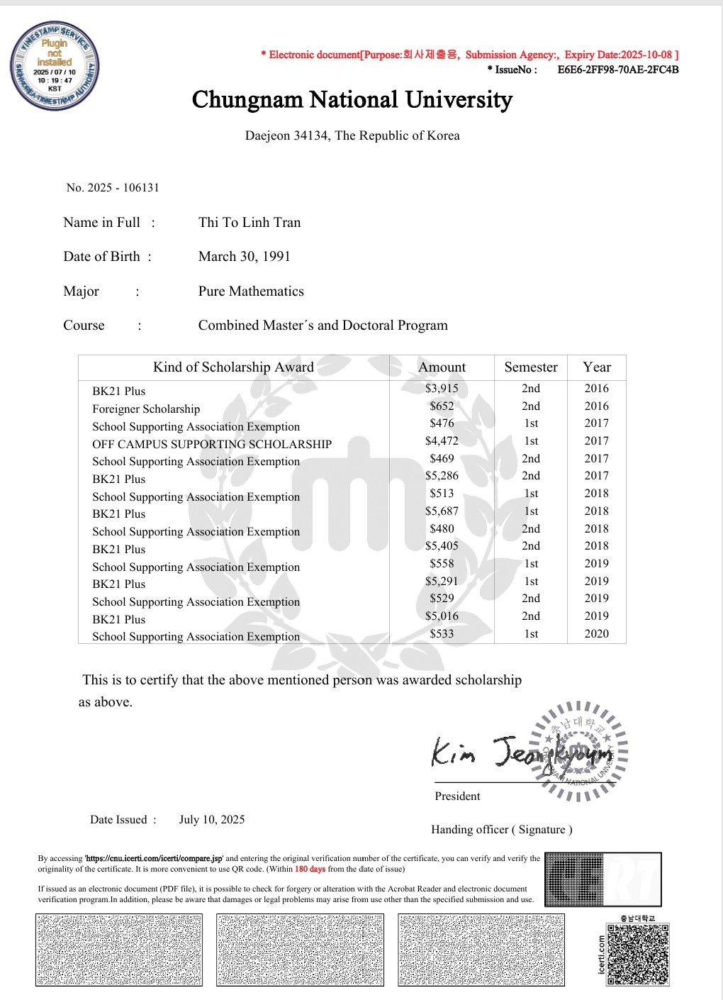
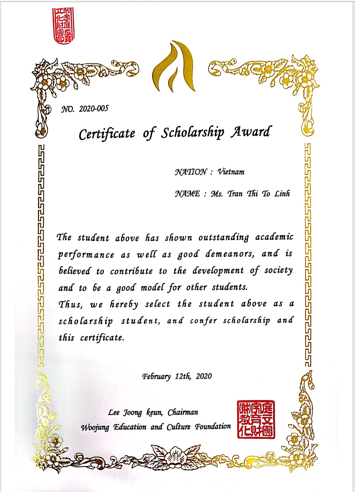
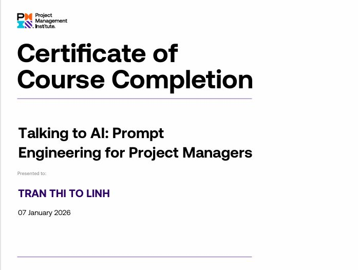
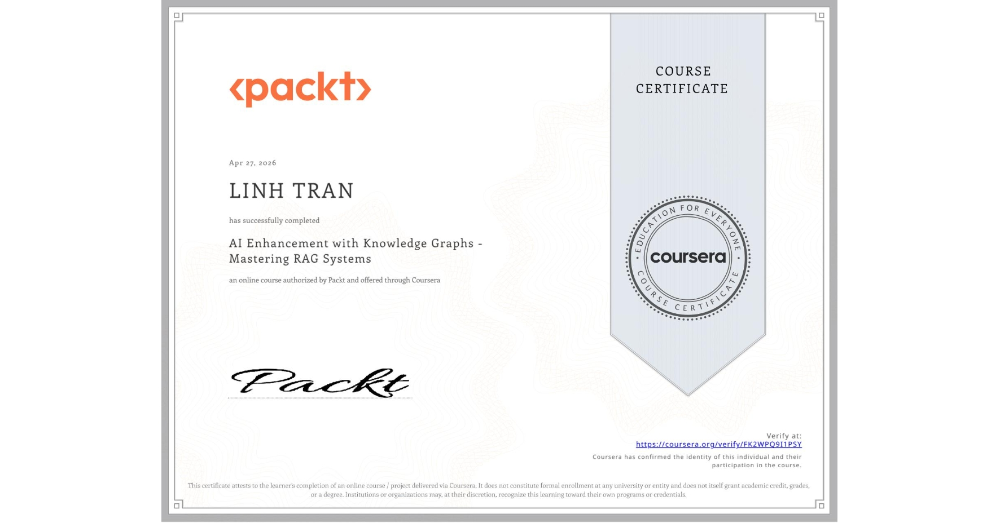
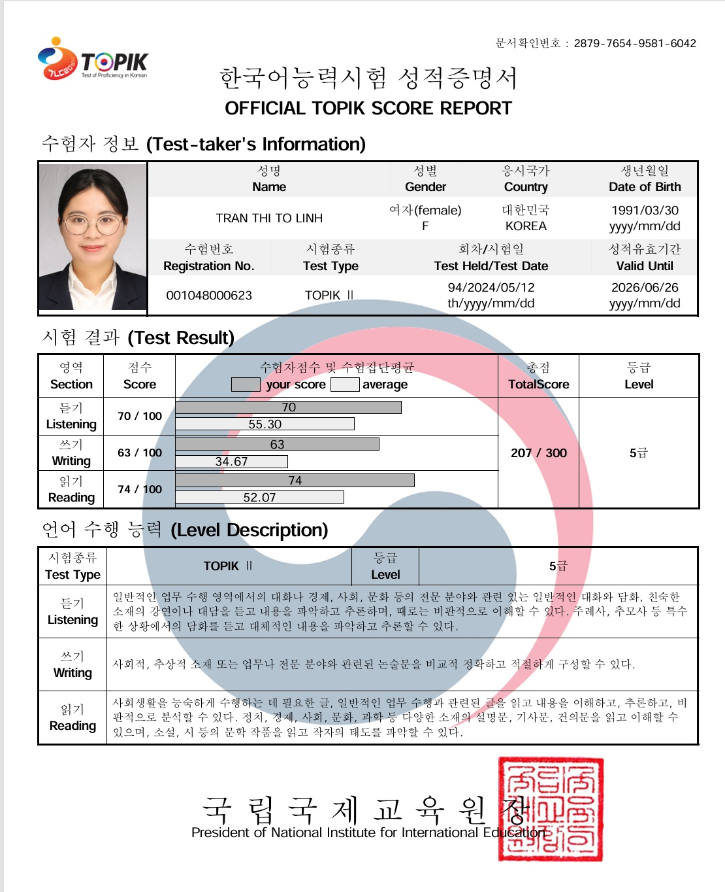
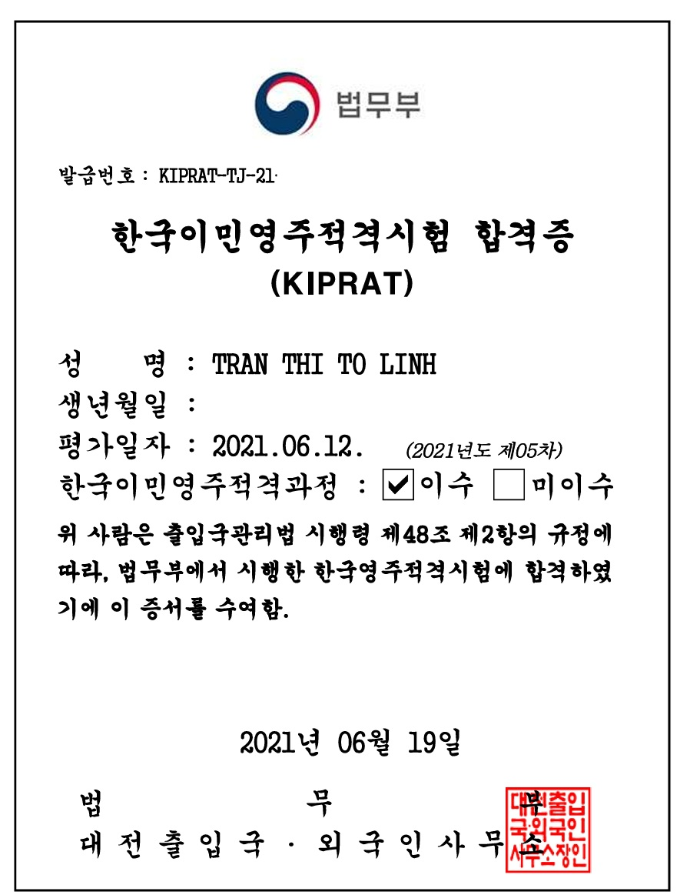

PhD in Mathematics
South Korea
I am an AI engineer with a PhD in Mathematics and experience developing applied AI systems for industrial and business settings. My work spans time series analysis, anomaly detection, natural language processing, and computer vision. I combine a strong mathematical foundation with hands-on experience researching models, evaluating algorithms, and deploying AI solutions.
At BNF Technology, I worked on knowledge graph and retrieval-augmented generation systems for root cause analysis, anomaly detection, and enterprise question answering. My experience also includes MLOps workflows, international customer deployments, and project coordination. Through personal projects, I explore robot control, visual recognition, and practical AI applications using tools such as ROS 2, Gazebo, FastAPI, and Docker.
South Korea
Vietnam
Vietnam
Developed a Neo4j knowledge graph model to analyze root causes of vehicle failures, integrating retrieval-augmented generation for chatbot responses.
Neo4j · Knowledge graphs · RAG
Developed models to identify point-based and sequence-based anomalies in a car suspension dataset.
Transformers · PyTorch · CNNs · RNNs
Built a retrieval-augmented chatbot for questions about company policies, HR workflows, and R&D training documents.
RAG · Angular · Qwen 3.5
Created project plans, managed delivery schedules, and delivered more than 100 SAP ABAP SD–MM screens on time and within budget.
SAP ABAP
Developed and deployed a RAG system for answering questions about Vietnamese law.
RAG · MongoDB · Docker · Kafka · CI/CD
Researched and developed a hand-gesture control system for quadruped robots.
ROS 2 · Gazebo · Python
A document retrieval project using GraphRAG.
GraphRAG
Researched and developed a system to identify semantic attributes in pedestrian images.
DINOv3 · CLIP






